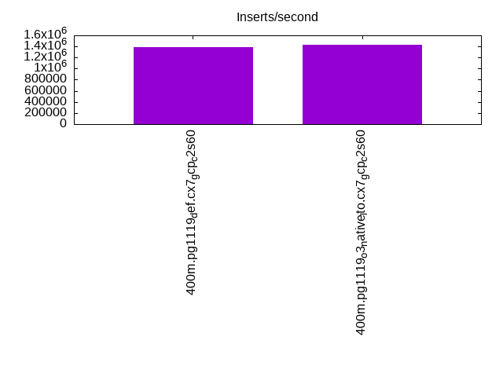
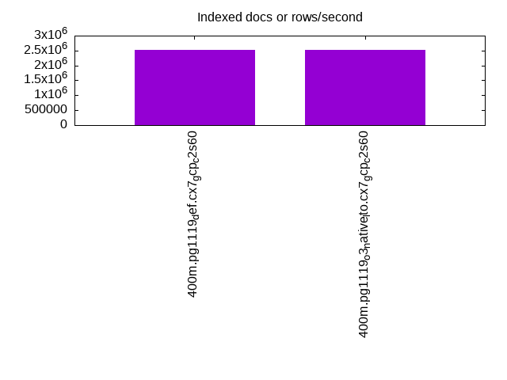
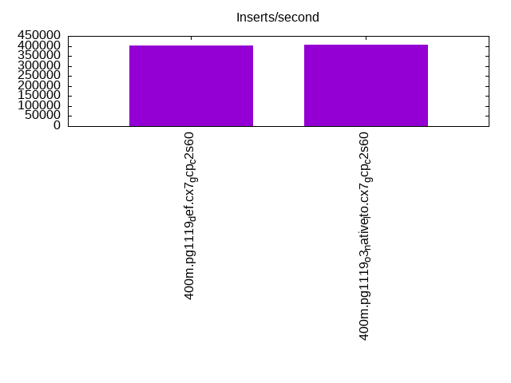
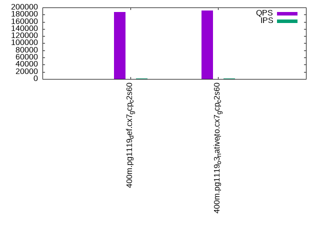
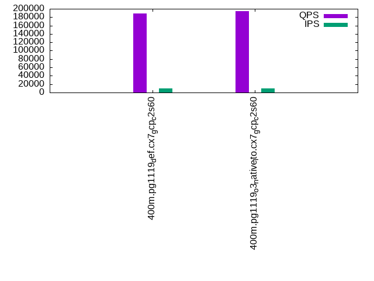
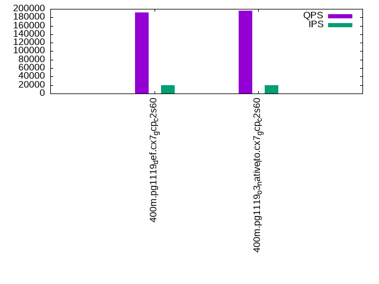

This is a report for the insert benchmark with 400M docs and 20 client(s). It is generated by scripts (bash, awk, sed) and Tufte might not be impressed. An overview of the insert benchmark is here and a short update is here. Below, by DBMS, I mean DBMS+version.config. An example is my8020.c10b40 where my means MySQL, 8020 is version 8.0.20 and c10b40 is the name for the configuration file.
The test server is a c2-standard-60 from GCP with 30 cores, hyperthreading disabled, 240G RAM and 3T from XFS and SW RAID 0 striped over 8 local NVMe drives. The benchmark was run with 20 clients and there were 1 or 2 connections per client (1 for queries, 1 for inserts). The benchmark loads 400M rows without secondary indexes, creates secondary indexes, loads another 400M rows then does 3 read+write tests for one hour each that do queries as fast as possible with 100, 500 and then 1000 writes/second/client concurrent with the queries. Each read-write test runs for 1800 seconds. The test was configured to use a table per client. The database is cached by the storage engine and the only IO is for writes. Clients and the DBMS share one server. The per-database configs are in the per-database subdirectories here.
The tested DBMS are:
The numbers are inserts/s for l.i0 and l.i1, indexed docs (or rows) /s for l.x and queries/s for q*.2. The values are the average rate over the entire test for inserts (IPS) and queries (QPS). The range of values for IPS and QPS is split into 3 parts: bottom 25%, middle 50%, top 25%. Values in the bottom 25% have a red background, values in the top 25% have a green background and values in the middle have no color. A gray background is used for values that can be ignored because the DBMS did not sustain the target insert rate. Red backgrounds are not used when the minimum value is within 80% of the max value.
| dbms | l.i0 | l.x | l.i1 | q100.1 | q500.1 | q1000.1 |
|---|---|---|---|---|---|---|
| 400m.pg1119_def.cx7_gcp_c2s60 | 1388889 | 2532278 | 403226 | 187781 | 188800 | 191320 |
| 400m.pg1119_o3_native_lto.cx7_gcp_c2s60 | 1428571 | 2516352 | 406918 | 191643 | 193929 | 195925 |
This lists the average rate of inserts/s for the tests that do inserts concurrent with queries. For such tests the query rate is listed in the table above. The read+write tests are setup so that the insert rate should match the target rate every second. Cells that are not at least 95% of the target have a red background to indicate a failure to satisfy the target.
| dbms | q100.1 | q500.1 | q1000.1 |
|---|---|---|---|
| pg1119_def.cx7_gcp_c2s60 | 1976 | 9885 | 19748 |
| pg1119_o3_native_lto.cx7_gcp_c2s60 | 1976 | 9885 | 19748 |
| target | 2000 | 10000 | 20000 |
l.i0: load without secondary indexes. Graphs for performance per 1-second interval are here.
Average throughput:
Insert response time histogram: each cell has the percentage of responses that take <= the time in the header and max is the max response time in seconds. For the max column values in the top 25% of the range have a red background and in the bottom 25% of the range have a green background. The red background is not used when the min value is within 80% of the max value.
| dbms | 256us | 1ms | 4ms | 16ms | 64ms | 256ms | 1s | 4s | 16s | gt | max |
|---|---|---|---|---|---|---|---|---|---|---|---|
| pg1119_def.cx7_gcp_c2s60 | 61.871 | 37.178 | 0.904 | 0.012 | 0.019 | 0.015 | 0.981 | ||||
| pg1119_o3_native_lto.cx7_gcp_c2s60 | 60.984 | 38.162 | 0.805 | 0.013 | 0.024 | 0.013 | 0.756 |
Performance metrics for the DBMS listed above. Some are normalized by throughput, others are not. Legend for results is here.
ips qps rps rmbps wps wmbps rpq rkbpq wpi wkbpi csps cpups cspq cpupq dbgb1 dbgb2 rss maxop p50 p99 tag 1388889 0 0 0.0 1847.0 464.6 0.000 0.000 0.001 0.343 211205 61.0 0.152 13 38.3 103.2 NA 0.981 79014 9390 400m.pg1119_def.cx7_gcp_c2s60 1428571 0 0 0.0 1878.0 470.4 0.000 0.000 0.001 0.337 236836 59.9 0.166 13 38.3 103.2 NA 0.756 81410 8391 400m.pg1119_o3_native_lto.cx7_gcp_c2s60
l.x: create secondary indexes.
Average throughput:
Performance metrics for the DBMS listed above. Some are normalized by throughput, others are not. Legend for results is here.
ips qps rps rmbps wps wmbps rpq rkbpq wpi wkbpi csps cpups cspq cpupq dbgb1 dbgb2 rss maxop p50 p99 tag 2532278 0 9868 115.3 3474.3 845.9 0.004 0.047 0.001 0.342 100083 26.0 0.040 3 73.5 170.6 0.0 0.362 NA NA 400m.pg1119_def.cx7_gcp_c2s60 2516352 0 7029 107.3 3445.1 849.0 0.003 0.044 0.001 0.345 102102 24.8 0.041 3 73.5 170.5 0.0 0.052 NA NA 400m.pg1119_o3_native_lto.cx7_gcp_c2s60
l.i1: continue load after secondary indexes created. Graphs for performance per 1-second interval are here.
Average throughput:
Insert response time histogram: each cell has the percentage of responses that take <= the time in the header and max is the max response time in seconds. For the max column values in the top 25% of the range have a red background and in the bottom 25% of the range have a green background. The red background is not used when the min value is within 80% of the max value.
| dbms | 256us | 1ms | 4ms | 16ms | 64ms | 256ms | 1s | 4s | 16s | gt | max |
|---|---|---|---|---|---|---|---|---|---|---|---|
| pg1119_def.cx7_gcp_c2s60 | nonzero | 96.066 | 2.246 | 1.642 | 0.033 | 0.011 | 0.001 | 1.341 | |||
| pg1119_o3_native_lto.cx7_gcp_c2s60 | 0.010 | 96.127 | 2.179 | 1.641 | 0.033 | 0.010 | 0.796 |
Performance metrics for the DBMS listed above. Some are normalized by throughput, others are not. Legend for results is here.
ips qps rps rmbps wps wmbps rpq rkbpq wpi wkbpi csps cpups cspq cpupq dbgb1 dbgb2 rss maxop p50 p99 tag 403226 0 5371 43.2 3615.5 495.4 0.013 0.110 0.009 1.258 264836 50.6 0.657 38 165.8 320.3 NA 1.341 26621 1648 400m.pg1119_def.cx7_gcp_c2s60 406918 0 5063 45.3 3863.1 507.0 0.012 0.114 0.009 1.276 287873 50.4 0.707 37 165.8 323.6 NA 0.796 26421 1748 400m.pg1119_o3_native_lto.cx7_gcp_c2s60
q100.1: range queries with 100 insert/s per client. Graphs for performance per 1-second interval are here.
Average throughput:
Query response time histogram: each cell has the percentage of responses that take <= the time in the header and max is the max response time in seconds. For max values in the top 25% of the range have a red background and in the bottom 25% of the range have a green background. The red background is not used when the min value is within 80% of the max value.
| dbms | 256us | 1ms | 4ms | 16ms | 64ms | 256ms | 1s | 4s | 16s | gt | max |
|---|---|---|---|---|---|---|---|---|---|---|---|
| pg1119_def.cx7_gcp_c2s60 | 99.967 | 0.026 | 0.006 | 0.001 | nonzero | 0.026 | |||||
| pg1119_o3_native_lto.cx7_gcp_c2s60 | 99.968 | 0.025 | 0.006 | 0.001 | nonzero | 0.024 |
Insert response time histogram: each cell has the percentage of responses that take <= the time in the header and max is the max response time in seconds. For max values in the top 25% of the range have a red background and in the bottom 25% of the range have a green background. The red background is not used when the min value is within 80% of the max value.
| dbms | 256us | 1ms | 4ms | 16ms | 64ms | 256ms | 1s | 4s | 16s | gt | max |
|---|---|---|---|---|---|---|---|---|---|---|---|
| pg1119_def.cx7_gcp_c2s60 | 95.726 | 3.575 | 0.681 | 0.008 | 0.010 | 0.337 | |||||
| pg1119_o3_native_lto.cx7_gcp_c2s60 | 95.682 | 3.364 | 0.939 | 0.015 | 0.185 |
Performance metrics for the DBMS listed above. Some are normalized by throughput, others are not. Legend for results is here.
ips qps rps rmbps wps wmbps rpq rkbpq wpi wkbpi csps cpups cspq cpupq dbgb1 dbgb2 rss maxop p50 p99 tag 1976 187781 0 0.0 4115.3 95.3 0.000 0.000 2.083 49.374 667106 62.9 3.553 100 166.6 289.3 0.0 0.026 9338 8982 400m.pg1119_def.cx7_gcp_c2s60 1976 191643 0 0.0 3998.1 98.2 0.000 0.000 2.024 50.878 679241 63.0 3.544 99 166.6 292.5 0.0 0.024 9541 9142 400m.pg1119_o3_native_lto.cx7_gcp_c2s60
q500.1: range queries with 500 insert/s per client. Graphs for performance per 1-second interval are here.
Average throughput:
Query response time histogram: each cell has the percentage of responses that take <= the time in the header and max is the max response time in seconds. For max values in the top 25% of the range have a red background and in the bottom 25% of the range have a green background. The red background is not used when the min value is within 80% of the max value.
| dbms | 256us | 1ms | 4ms | 16ms | 64ms | 256ms | 1s | 4s | 16s | gt | max |
|---|---|---|---|---|---|---|---|---|---|---|---|
| pg1119_def.cx7_gcp_c2s60 | 99.902 | 0.064 | 0.030 | 0.004 | nonzero | 0.053 | |||||
| pg1119_o3_native_lto.cx7_gcp_c2s60 | 99.906 | 0.061 | 0.029 | 0.004 | nonzero | 0.053 |
Insert response time histogram: each cell has the percentage of responses that take <= the time in the header and max is the max response time in seconds. For max values in the top 25% of the range have a red background and in the bottom 25% of the range have a green background. The red background is not used when the min value is within 80% of the max value.
| dbms | 256us | 1ms | 4ms | 16ms | 64ms | 256ms | 1s | 4s | 16s | gt | max |
|---|---|---|---|---|---|---|---|---|---|---|---|
| pg1119_def.cx7_gcp_c2s60 | 43.824 | 26.244 | 28.555 | 1.372 | 0.005 | 0.332 | |||||
| pg1119_o3_native_lto.cx7_gcp_c2s60 | 43.888 | 25.996 | 28.537 | 1.577 | 0.002 | 0.326 |
Performance metrics for the DBMS listed above. Some are normalized by throughput, others are not. Legend for results is here.
ips qps rps rmbps wps wmbps rpq rkbpq wpi wkbpi csps cpups cspq cpupq dbgb1 dbgb2 rss maxop p50 p99 tag 9885 188800 0 0.0 6944.6 215.6 0.000 0.000 0.703 22.334 657913 64.0 3.485 102 171.6 259.0 0.0 0.053 9382 8902 400m.pg1119_def.cx7_gcp_c2s60 9885 193929 0 0.0 6879.7 212.6 0.000 0.000 0.696 22.025 672766 64.1 3.469 99 171.6 260.9 0.0 0.053 9625 9110 400m.pg1119_o3_native_lto.cx7_gcp_c2s60
q1000.1: range queries with 1000 insert/s per client. Graphs for performance per 1-second interval are here.
Average throughput:
Query response time histogram: each cell has the percentage of responses that take <= the time in the header and max is the max response time in seconds. For max values in the top 25% of the range have a red background and in the bottom 25% of the range have a green background. The red background is not used when the min value is within 80% of the max value.
| dbms | 256us | 1ms | 4ms | 16ms | 64ms | 256ms | 1s | 4s | 16s | gt | max |
|---|---|---|---|---|---|---|---|---|---|---|---|
| pg1119_def.cx7_gcp_c2s60 | 99.838 | 0.111 | 0.044 | 0.007 | nonzero | nonzero | nonzero | 0.955 | |||
| pg1119_o3_native_lto.cx7_gcp_c2s60 | 99.842 | 0.108 | 0.043 | 0.007 | nonzero | nonzero | nonzero | 0.420 |
Insert response time histogram: each cell has the percentage of responses that take <= the time in the header and max is the max response time in seconds. For max values in the top 25% of the range have a red background and in the bottom 25% of the range have a green background. The red background is not used when the min value is within 80% of the max value.
| dbms | 256us | 1ms | 4ms | 16ms | 64ms | 256ms | 1s | 4s | 16s | gt | max |
|---|---|---|---|---|---|---|---|---|---|---|---|
| pg1119_def.cx7_gcp_c2s60 | 67.585 | 17.632 | 14.143 | 0.620 | 0.015 | 0.004 | 2.113 | ||||
| pg1119_o3_native_lto.cx7_gcp_c2s60 | 66.971 | 17.617 | 14.687 | 0.716 | 0.005 | 0.004 | 2.446 |
Performance metrics for the DBMS listed above. Some are normalized by throughput, others are not. Legend for results is here.
ips qps rps rmbps wps wmbps rpq rkbpq wpi wkbpi csps cpups cspq cpupq dbgb1 dbgb2 rss maxop p50 p99 tag 19748 191320 62 0.5 6460.2 297.5 0.000 0.003 0.327 15.428 649090 65.4 3.393 103 185.4 266.8 0.0 0.955 9510 8758 400m.pg1119_def.cx7_gcp_c2s60 19748 195925 63 0.5 6516.3 297.0 0.000 0.003 0.330 15.399 663899 65.4 3.389 100 185.4 268.1 0.0 0.420 9749 8966 400m.pg1119_o3_native_lto.cx7_gcp_c2s60
l.i0: load without secondary indexes
Performance metrics for all DBMS, not just the ones listed above. Some are normalized by throughput, others are not. Legend for results is here.
ips qps rps rmbps wps wmbps rpq rkbpq wpi wkbpi csps cpups cspq cpupq dbgb1 dbgb2 rss maxop p50 p99 tag 1388889 0 0 0.0 1847.0 464.6 0.000 0.000 0.001 0.343 211205 61.0 0.152 13 38.3 103.2 NA 0.981 79014 9390 400m.pg1119_def.cx7_gcp_c2s60 1428571 0 0 0.0 1878.0 470.4 0.000 0.000 0.001 0.337 236836 59.9 0.166 13 38.3 103.2 NA 0.756 81410 8391 400m.pg1119_o3_native_lto.cx7_gcp_c2s60
l.x: create secondary indexes
Performance metrics for all DBMS, not just the ones listed above. Some are normalized by throughput, others are not. Legend for results is here.
ips qps rps rmbps wps wmbps rpq rkbpq wpi wkbpi csps cpups cspq cpupq dbgb1 dbgb2 rss maxop p50 p99 tag 2532278 0 9868 115.3 3474.3 845.9 0.004 0.047 0.001 0.342 100083 26.0 0.040 3 73.5 170.6 0.0 0.362 NA NA 400m.pg1119_def.cx7_gcp_c2s60 2516352 0 7029 107.3 3445.1 849.0 0.003 0.044 0.001 0.345 102102 24.8 0.041 3 73.5 170.5 0.0 0.052 NA NA 400m.pg1119_o3_native_lto.cx7_gcp_c2s60
l.i1: continue load after secondary indexes created
Performance metrics for all DBMS, not just the ones listed above. Some are normalized by throughput, others are not. Legend for results is here.
ips qps rps rmbps wps wmbps rpq rkbpq wpi wkbpi csps cpups cspq cpupq dbgb1 dbgb2 rss maxop p50 p99 tag 403226 0 5371 43.2 3615.5 495.4 0.013 0.110 0.009 1.258 264836 50.6 0.657 38 165.8 320.3 NA 1.341 26621 1648 400m.pg1119_def.cx7_gcp_c2s60 406918 0 5063 45.3 3863.1 507.0 0.012 0.114 0.009 1.276 287873 50.4 0.707 37 165.8 323.6 NA 0.796 26421 1748 400m.pg1119_o3_native_lto.cx7_gcp_c2s60
q100.1: range queries with 100 insert/s per client
Performance metrics for all DBMS, not just the ones listed above. Some are normalized by throughput, others are not. Legend for results is here.
ips qps rps rmbps wps wmbps rpq rkbpq wpi wkbpi csps cpups cspq cpupq dbgb1 dbgb2 rss maxop p50 p99 tag 1976 187781 0 0.0 4115.3 95.3 0.000 0.000 2.083 49.374 667106 62.9 3.553 100 166.6 289.3 0.0 0.026 9338 8982 400m.pg1119_def.cx7_gcp_c2s60 1976 191643 0 0.0 3998.1 98.2 0.000 0.000 2.024 50.878 679241 63.0 3.544 99 166.6 292.5 0.0 0.024 9541 9142 400m.pg1119_o3_native_lto.cx7_gcp_c2s60
q500.1: range queries with 500 insert/s per client
Performance metrics for all DBMS, not just the ones listed above. Some are normalized by throughput, others are not. Legend for results is here.
ips qps rps rmbps wps wmbps rpq rkbpq wpi wkbpi csps cpups cspq cpupq dbgb1 dbgb2 rss maxop p50 p99 tag 9885 188800 0 0.0 6944.6 215.6 0.000 0.000 0.703 22.334 657913 64.0 3.485 102 171.6 259.0 0.0 0.053 9382 8902 400m.pg1119_def.cx7_gcp_c2s60 9885 193929 0 0.0 6879.7 212.6 0.000 0.000 0.696 22.025 672766 64.1 3.469 99 171.6 260.9 0.0 0.053 9625 9110 400m.pg1119_o3_native_lto.cx7_gcp_c2s60
q1000.1: range queries with 1000 insert/s per client
Performance metrics for all DBMS, not just the ones listed above. Some are normalized by throughput, others are not. Legend for results is here.
ips qps rps rmbps wps wmbps rpq rkbpq wpi wkbpi csps cpups cspq cpupq dbgb1 dbgb2 rss maxop p50 p99 tag 19748 191320 62 0.5 6460.2 297.5 0.000 0.003 0.327 15.428 649090 65.4 3.393 103 185.4 266.8 0.0 0.955 9510 8758 400m.pg1119_def.cx7_gcp_c2s60 19748 195925 63 0.5 6516.3 297.0 0.000 0.003 0.330 15.399 663899 65.4 3.389 100 185.4 268.1 0.0 0.420 9749 8966 400m.pg1119_o3_native_lto.cx7_gcp_c2s60
Insert response time histogram
256us 1ms 4ms 16ms 64ms 256ms 1s 4s 16s gt max tag 0.000 61.871 37.178 0.904 0.012 0.019 0.015 0.000 0.000 0.000 0.981 pg1119_def.cx7_gcp_c2s60 0.000 60.984 38.162 0.805 0.013 0.024 0.013 0.000 0.000 0.000 0.756 pg1119_o3_native_lto.cx7_gcp_c2s60
TODO - determine whether there is data for create index response time
Insert response time histogram
256us 1ms 4ms 16ms 64ms 256ms 1s 4s 16s gt max tag 0.000 nonzero 96.066 2.246 1.642 0.033 0.011 0.001 0.000 0.000 1.341 pg1119_def.cx7_gcp_c2s60 0.000 0.010 96.127 2.179 1.641 0.033 0.010 0.000 0.000 0.000 0.796 pg1119_o3_native_lto.cx7_gcp_c2s60
Query response time histogram
256us 1ms 4ms 16ms 64ms 256ms 1s 4s 16s gt max tag 99.967 0.026 0.006 0.001 nonzero 0.000 0.000 0.000 0.000 0.000 0.026 pg1119_def.cx7_gcp_c2s60 99.968 0.025 0.006 0.001 nonzero 0.000 0.000 0.000 0.000 0.000 0.024 pg1119_o3_native_lto.cx7_gcp_c2s60
Insert response time histogram
256us 1ms 4ms 16ms 64ms 256ms 1s 4s 16s gt max tag 0.000 0.000 95.726 3.575 0.681 0.008 0.010 0.000 0.000 0.000 0.337 pg1119_def.cx7_gcp_c2s60 0.000 0.000 95.682 3.364 0.939 0.015 0.000 0.000 0.000 0.000 0.185 pg1119_o3_native_lto.cx7_gcp_c2s60
Query response time histogram
256us 1ms 4ms 16ms 64ms 256ms 1s 4s 16s gt max tag 99.902 0.064 0.030 0.004 nonzero 0.000 0.000 0.000 0.000 0.000 0.053 pg1119_def.cx7_gcp_c2s60 99.906 0.061 0.029 0.004 nonzero 0.000 0.000 0.000 0.000 0.000 0.053 pg1119_o3_native_lto.cx7_gcp_c2s60
Insert response time histogram
256us 1ms 4ms 16ms 64ms 256ms 1s 4s 16s gt max tag 0.000 0.000 43.824 26.244 28.555 1.372 0.005 0.000 0.000 0.000 0.332 pg1119_def.cx7_gcp_c2s60 0.000 0.000 43.888 25.996 28.537 1.577 0.002 0.000 0.000 0.000 0.326 pg1119_o3_native_lto.cx7_gcp_c2s60
Query response time histogram
256us 1ms 4ms 16ms 64ms 256ms 1s 4s 16s gt max tag 99.838 0.111 0.044 0.007 nonzero nonzero nonzero 0.000 0.000 0.000 0.955 pg1119_def.cx7_gcp_c2s60 99.842 0.108 0.043 0.007 nonzero nonzero nonzero 0.000 0.000 0.000 0.420 pg1119_o3_native_lto.cx7_gcp_c2s60
Insert response time histogram
256us 1ms 4ms 16ms 64ms 256ms 1s 4s 16s gt max tag 0.000 0.000 67.585 17.632 14.143 0.620 0.015 0.004 0.000 0.000 2.113 pg1119_def.cx7_gcp_c2s60 0.000 0.000 66.971 17.617 14.687 0.716 0.005 0.004 0.000 0.000 2.446 pg1119_o3_native_lto.cx7_gcp_c2s60